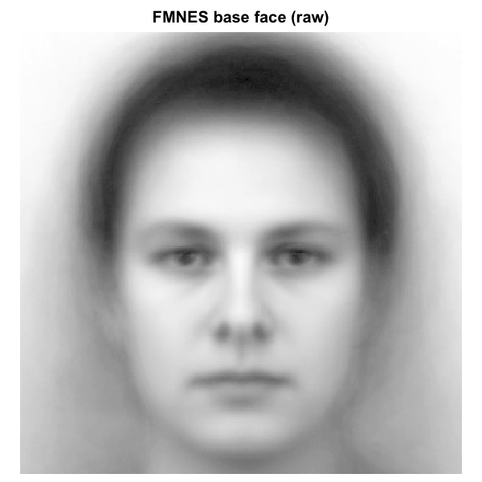
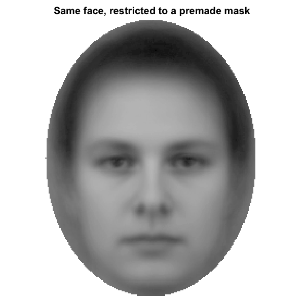
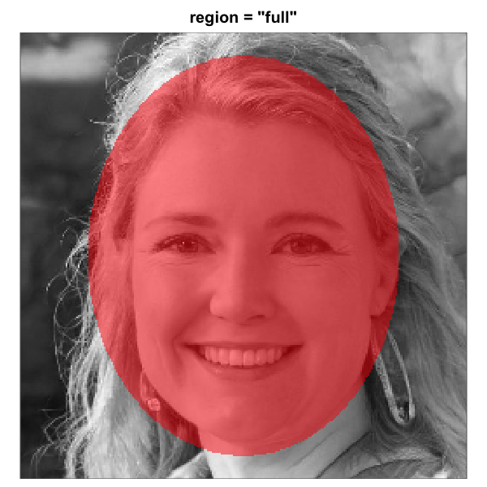
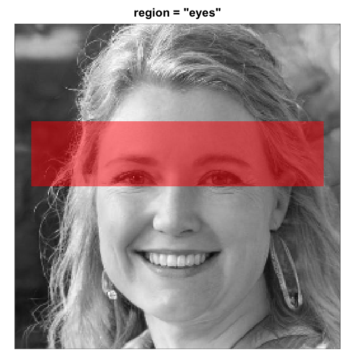
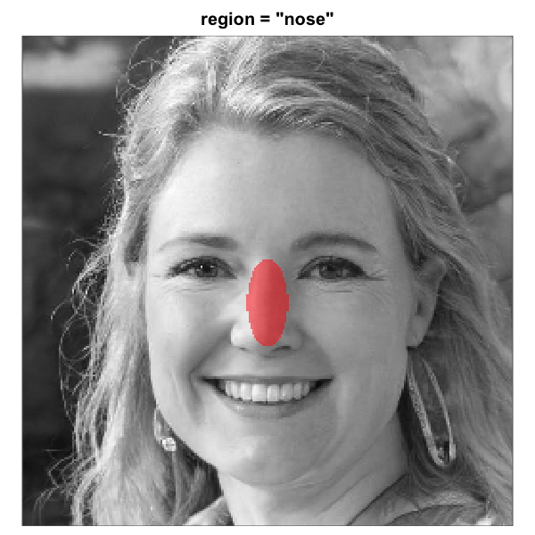
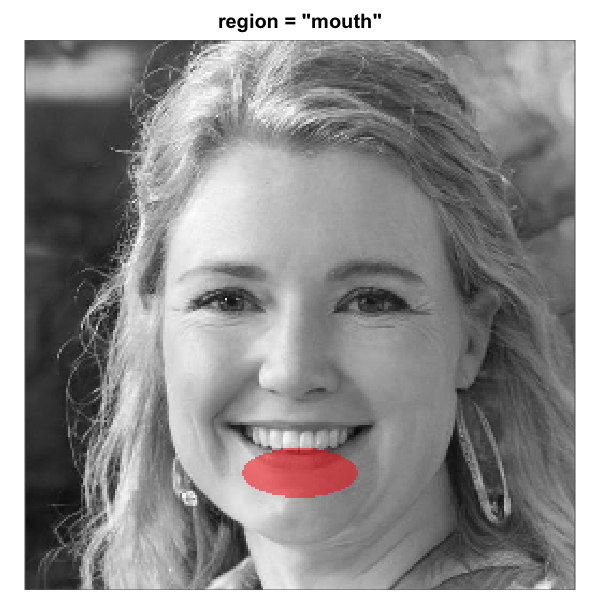

rcisignal: a complete workflow for reverse-correlation data quality
Manuel Oliveira
2026-05-02
Source:vignettes/rcisignal.Rmd
rcisignal.Rmd1. Overview
rcisignal consolidates the quality-assurance workflow
for reverse-correlation (RC) experiments into one toolkit. It addresses
three questions, in order. First, are the inputs clean (response coding,
trial counts, response bias, stimulus- pool alignment)? Second, is the
signal informative and stable (does each condition’s group CI carry more
pattern than chance, and would the pattern replicate on a different half
of the producers)? Third, when there is more than one condition, are the
conditions distinguishable, both in overall magnitude and in spatial
location?
Two halves of the package address these questions in turn. The
input-side diagnostics (run_diagnostics() and the
check_* family) cover the first question. The output-side
reliability and discriminability metrics
(run_reliability(), run_discriminability(),
infoval(), agreement_map_test(), together with
the underlying rel_* and pixel_t_test()
primitives) cover the second and third.
1.1 Scope
For 2IFC stimulus generation and CI computation,
rcisignal delegates to the upstream rcicr package
(Dotsch, 2016, 2023). ci_from_responses_2ifc() is a thin
wrapper around rcicr::batchGenerateCI2IFC() that handles
the integration gotchas. Brief-RC (Schmitz, Rougier, & Yzerbyt,
2024) is implemented natively because upstream rcicr does
not ship Brief-RC machinery.
The metrics in this package quantify whether a CI is stable (within-condition) and separable (between-condition). Whether the CI accurately reflects the producer’s mental representation of the target trait is a separate validity question, typically addressed by an external rater study, and sits outside the package. Cone, Brown-Iannuzzi, Lei, & Dotsch (2021) showed that the standard two-phase rating design inflates Type I error; rcisignal’s metrics operate directly on producer-level pixel signal and thereby sidestep that pitfall.
The intended audience is RC researchers at an intermediate R level
with basic familiarity with the rcicr package or with the
Schmitz et al. (2024) Brief-RC structure. No prior expertise in
data.table, S3 classes, permutation testing, or
psychometric variance decomposition is assumed.
2. Installation
# Latest release from GitHub.
remotes::install_github("olivethree/rcisignal",
dependencies = TRUE)
# rcicr is a Suggests dep; install it if you need the 2IFC path.
install.packages("rcicr") # CRAN
remotes::install_github("rdotsch/rcicr") # developmentThe mandatory dependencies are minimal (cli and
data.table, plus the base packages). PNG and JPEG readers
(png, jpeg), rcicr for 2IFC
pipelines, and psych for ICC cross-validation sit in
Suggests and load on demand.
3. Signal matrix
Almost every analytical function in rcisignal operates
on a single data structure: a signal matrix with one
row per pixel and one column per producer (participant). The
orchestrators (run_reliability(),
run_discriminability()) take a signal matrix as input, as
do rel_split_half(), rel_icc(),
rel_loo(), pixel_t_test(),
rel_cluster_test(), rel_dissimilarity(),
infoval(), and agreement_map_test(). Getting
the signal matrix right suffices for everything downstream.
A note on terminology. We call this object a signal matrix because that is where any signal a producer’s responses introduce will sit (if any signal is present at all). Other RC papers call the same object a noise matrix, because the underlying pixel values are visual noise patterns. Both names are reasonable: the data really do contain a mixture of noise (the per-trial random patterns the experiment showed) and signal (the producer’s sign-weighted aggregation of those patterns). The metrics in this package are specifically designed to test how much of that mixture is signal rather than noise. Whatever you call the object, the shape and interpretation are the same.
To avoid ambiguity, rcisignal’s code reserves the name
noise_matrix for a different object: the
n_pixels x pool_size matrix of trial-level noise patterns
produced at stimulus generation. That matrix is an input to CI
computation and to infoval()’s reference simulation; the
signal matrix is the per-producer output (one column
per producer, each column the producer’s mean noise pattern weighted by
their trial-level responses). §4.3 covers noise_matrix; the
rest of this section is about the signal matrix.
Two paths lead to a signal matrix, with different downstream consequences.
3.1 Two paths to the signal matrix
Mode 2: from raw trial-level responses
(recommended). Use ci_from_responses_2ifc() for
2IFC pipelines or ci_from_responses_briefrc() for Brief-RC.
Both return a list with $signal_matrix already in the right
shape, base-subtracted, and unscaled (i.e. carrying the raw mask). This
is the safe path for downstream reliability metrics.
res <- ci_from_responses_2ifc(
responses,
rdata_path = "data/rcicr_stimuli.Rdata",
baseimage = "base"
)
signal <- res$signal_matrixMode 1: from pre-rendered CI PNGs on disk. Use
read_cis() to read a directory of PNG/JPEG CIs, followed by
extract_signal() (or the read_signal_matrix()
shortcut that composes both). This path is offered for convenience and
carries a caveat: PNG pixels are necessarily what was rendered to disk
(base + scaling(mask)). After base subtraction, the
resulting signal is scaling(mask) rather than the raw
mask.
signal <- read_signal_matrix(
dir = "data/cis_condition_A/",
base_image_path = "data/base.jpg"
)3.2 Raw mask vs rendered CI
For correlation-based metrics (rel_split_half(),
rel_loo()), the rendered scaling is mostly harmless because
a single uniform linear stretch preserves Pearson correlation. For
variance-based metrics (rel_icc(),
pixel_t_test(), the cluster test, and the Euclidean half of
rel_dissimilarity()), scaling distorts the numbers. The
"matched" (per-CI) scaling option, where each producer’s
mask is stretched to the base’s dynamic range, breaks correlation-based
metrics as well.
rcisignal enforces this distinction at runtime via a
source attribute attached to every signal matrix:
- Functions that build raw masks
(
ci_from_responses_2ifc(),ci_from_responses_briefrc()) tag the matrix withattr(., "source") = "raw". - Functions that read PNGs (
read_cis(),extract_signal(),read_signal_matrix()) tag withattr(., "source") = "rendered". - Variance-based metrics call an internal
assert_raw_signal()helper that errors when given a"rendered"matrix unless the caller passesacknowledge_scaling = TRUE.
# This works:
rel_icc(res$signal_matrix)
# This errors with a clear message:
rel_icc(read_signal_matrix("cis/", "base.jpg"))
#> Error: signal_matrix is a rendered CI (PNG-derived); ...
# Override after reading the explanation:
rel_icc(read_signal_matrix("cis/", "base.jpg"),
acknowledge_scaling = TRUE)A heuristic backstop (looks_scaled()) catches hand-built
signal matrices that have no source attribute but whose
dynamic range suggests scaling. The backstop emits a once-per-session
warning rather than erroring; silence with
options(rcisignal.silence_scaling_warning = TRUE).
One important exception: rcicr::computeInfoVal2IFC() is
unaffected by display scaling. It reads the raw $ci element
from the rcicr CI list internally
(norm(matrix(target_ci[["ci"]]), "f")) regardless of the
scaling argument used at generation, so the standard 2IFC
infoVal path is safe even when the displayed CIs are rendered.
Hand-rolled implementations (including
rcisignal::infoval(), which has to support Brief-RC where
no upstream function exists) require the raw mask explicitly.
4. Data preparation
This section covers the four objects the package consumes: trial-level responses, the noise matrix, a base image, and an optional face mask.
4.1 Response data
Trial-level data, one row per trial, in any tabular shape
(data.frame, data.table, tibble).
Required columns:
| Column | Type | Meaning |
|---|---|---|
participant_id |
char/int | producer identifier |
stimulus |
int | stimulus / pool id (range depends on method, see below) |
response |
+1 / -1
|
producer’s choice (see below) |
rt (optional) |
numeric | response time in ms (needed only for check_rt()) |
2IFC response coding
Each trial presents two faces drawn from a unique noise pair.
response = +1 if the producer picked the oriented variant
(base + noise), and -1 if they picked the
inverted variant (base - noise). A common silent failure in
2IFC pipelines is {0, 1} coding produced by experiment
software that records “left” / “right” as 0 / 1;
check_response_coding() flags this with a recode formula in
the suggestion text.
A 2IFC dataset with three participants and four trials each illustrates the format. On every trial the participant saw two stimuli (one oriented and one inverted noise pattern superimposed on the same base face) and chose one:
responses_2ifc <- data.frame(
participant_id = rep(c("P01", "P02", "P03"), each = 4),
stimulus = rep(1:4, times = 3),
response = c( 1, -1, 1, 1,
-1, 1, 1, -1,
1, 1, -1, 1),
rt = c(820, 910, 750, 880,
680, 1040, 720, 950,
900, 770, 990, 810)
)
responses_2ifc
#> participant_id stimulus response rt
#> 1 P01 1 1 820
#> 2 P01 2 -1 910
#> 3 P01 3 1 750
#> 4 P01 4 1 880
#> 5 P02 1 -1 680
#> 6 P02 2 1 1040
#> 7 P02 3 1 720
#> 8 P02 4 -1 950
#> 9 P03 1 1 900
#> 10 P03 2 1 770
#> 11 P03 3 -1 990
#> 12 P03 4 1 810The 2IFC stimulus column indexes the trial’s
stimulus pair, so its range is 1:n_trials. Every trial
has its own unique pair, so an id never repeats across trials within a
participant.
Brief-RC response coding (Schmitz et al. 2024)
Each trial presents 12 noisy faces (6 oriented,
base + noise_i, and 6 inverted,
base - noise_i), drawn from 6 distinct pool noise patterns.
The producer picks one. The data records one row per
trial: stimulus = pool id of the chosen noise
pattern; response = +1 if oriented chosen, -1
if inverted. Unselected faces are absent from the data; do not pad them
as zero rows.
A Brief-RC 12 dataset with the same three participants and four trials each illustrates the format:
responses_briefrc <- data.frame(
participant_id = rep(c("P01", "P02", "P03"), each = 4),
stimulus = c( 47, 112, 8, 263,
91, 17, 204, 55,
188, 142, 261, 73),
response = c( 1, -1, 1, 1,
-1, 1, -1, 1,
1, 1, -1, -1),
rt = c(1100, 1340, 980, 1210,
890, 1450, 1020, 1130,
1280, 1190, 1360, 1080)
)
responses_briefrc
#> participant_id stimulus response rt
#> 1 P01 47 1 1100
#> 2 P01 112 -1 1340
#> 3 P01 8 1 980
#> 4 P01 263 1 1210
#> 5 P02 91 -1 890
#> 6 P02 17 1 1450
#> 7 P02 204 -1 1020
#> 8 P02 55 1 1130
#> 9 P03 188 1 1280
#> 10 P03 142 1 1190
#> 11 P03 261 -1 1360
#> 12 P03 73 -1 1080What pool_size means concretely
In Brief-RC the stimulus column ranges from
1 to pool_size, where pool_size
is the total number of distinct noise patterns generated for the
experiment, i.e., the number of columns in the
noise_matrix (§4.3). On every trial the software draws 6
distinct pool patterns and presents each in both oriented and inverted
form, giving 12 alternatives. Across many trials, the same pool id can
therefore re-appear (and a producer can pick the same pool id more than
once). The exact re-use rate depends on the experimenter’s sampling
design, of which three regimes are common.
-
Without replacement at the presentation level: the
only path open when
n_trials x stim_per_trial == pool_size. Each pool item is shown exactly once across the whole task. A producer cannot choose the same pool id twice. Schmitz et al.- Experiment 1 used this regime (60 trials x 12 alternatives = 720
presentations, exactly matching their
pool_size = 720).
- Experiment 1 used this regime (60 trials x 12 alternatives = 720
presentations, exactly matching their
-
With replacement at the presentation level:
required when
n_trials x stim_per_trial > pool_size. Pool items are drawn randomly with possible repetition. A producer can choose the same pool id on two different trials (with the same response sign or with opposite signs). Example: 300 trials x 12 alternatives = 3600 presentations drawn from a 1500-item pool. - Hybrid designs (partial blocks, Latin squares, counterbalanced subsets per condition). Treat as with-replacement at the analysis level unless your design guarantees no repetition.
rcisignal is agnostic to the regime. Internally, before
computing the per-producer mask, it collapses any duplicated
stimulus ids in a producer’s data using
mean(response) exactly as Schmitz’s genMask()
formulation does. So if the same pool item is chosen twice with the same
sign, it contributes once with full weight; if chosen twice with
opposite signs, the two cancel and it contributes zero. The
genMask() divisor is
length(unique(chosen_stimuli)), not
n_trials.
Structural differences between 2IFC and Brief-RC data
| Aspect | 2IFC | Brief-RC 12 |
|---|---|---|
| Alternatives shown per trial | 2 (one oriented + one inverted) | 12 (six oriented + six inverted, drawn from six pool patterns) |
| Rows recorded per trial | 1 | 1 |
What stimulus indexes |
The trial’s stimulus pair | The chosen pool item only |
Range of stimulus
|
1 to n_trials
|
1 to pool_size
|
| Same id can repeat across trials | No (each trial has its own pair) | Depends on the experimenter’s sampling design (see above) |
| Unchosen alternatives recorded | Not applicable (only two shown) | No (treated as absent; do not pad as zero rows) |
read_responses() is a small wrapper around
data.table::fread() that validates the required
columns:
responses <- read_responses("study1data.csv", method = "2ifc")4.2 The .RData from
rcicr::generateStimuli2IFC()
The 2IFC pipeline uses an .RData file produced by
rcicr::generateStimuli2IFC(). The load-bearing objects for
analysis are:
-
base_faces: the loaded base-face matrices, grayscale in[0, 1]. List names (e.g."base") become thebaseimageargument downstream.base_face_filescarries the matching source paths. -
img_size: side length of the (square) image in pixels. -
p: the noise basis (with$patchesand$patchIdx), the sinusoidal dictionary used to assemble each trial’s noise. -
stimuli_params: a named list of matrices (one per base label) where each row carries one trial’s contrast weights. Reconstruct triali’s noise viarcicr::generateNoiseImage(stimuli_params[[base]][i, ], p).
n_trials, seed, label,
stimulus_path, trial,
generator_version, and use_same_parameters are
bookkeeping fields, not consumed by analysis.
reference_norms is created and inserted in place by
rcicr::computeInfoVal2IFC() on its first call; copy the
rdata first if you want it untouched.
The actual per-trial noise patterns are not stored
in the rdata. They are reconstructed on demand from
stimuli_params and p;
rcisignal::read_noise_matrix() does this automatically
(§4.3) and caches the result.
On macOS the file is saved with a lowercase .Rdata
extension; list.files(pattern = "\\.RData$") is
case-sensitive by default and will miss it. Use
ignore.case = TRUE when searching.
4.3 The noise matrix
The noise matrix is an n_pixels x pool_size numeric
matrix where each column is the noise pattern shown for one trial (or
pool item). It serves as input to CI computation, distinct from the
signal matrix, which is an output.
read_noise_matrix() is a single entry point that
auto-detects the source format from the file extension and transparently
caches slow-to-parse formats to a sibling .rds:
# Plain text matrix (Schmitz et al. 2024 OSF format).
# First call parses + writes data/noise_matrix.rds.
nm <- read_noise_matrix("data/noise_matrix.txt")
# Second call loads from the cache (fast).
nm <- read_noise_matrix("data/noise_matrix.txt")
# rcicr .Rdata source: reconstructs each trial via
# rcicr::generateNoiseImage() and caches the result.
nm <- read_noise_matrix("data/rcicr_stimuli.Rdata",
baseimage = "base")Cache invalidation is automatic: each .rds records the
source file’s size and modification time, and the next call reparses if
either differs. A once-per-session cli line announces
“cache built” or “cache reused”; silence with
options(rcisignal.silence_cache_messages = TRUE).
For the rcicr .Rdata reconstruction path, the upstream
rcicr package must be installed (it’s a Suggests).
Subsequent reads from the .rds cache do not need it.
validate_noise_matrix() runs basic sanity checks and
returns a diagnostic-style result rather than aborting:
validate_noise_matrix(nm,
expected_pixels = 256L * 256L,
expected_stimuli = 300L)4.4 The base image
The base face used at stimulus generation. Must be:
- Square (e.g. 256x256 or 512x512).
- Grayscale (single channel).
-
Pixel range
[0, 1](the conventionpng::readPNGandjpeg::readJPEGproduce). - Centred with eye/nose/mouth roughly at the geometry assumed by the default oval mask (eyes upper third, mouth lower third).
For a research-quality base, the webmorphR package by DeBruine (2022) is the current best-in-class tool:
library(webmorphR)
stim <- read_stim("path/to/raw_face_images/") |>
auto_delin() |> # automatic landmark delineation
align(procrustes = TRUE) |> # Procrustes alignment
crop(width = 0.85, height = 0.85) |> # tight crop
to_size(c(256, 256)) |> # rcicr-friendly size
greyscale() |>
avg() # morph into one average face
write_stim(stim, dir = "stimuli/", names = "base", format = "png")The output stimuli/base.png goes into
rcicr::generateStimuli2IFC(base_face_files = list(base = "stimuli/base.png")).
4.5 Face-region masks
rcisignal’s pixel-wise statistics aggregate or compare
across pixels, so the choice of which pixels enter the analysis
materially changes the reported number. A mask that includes hair and
background dilutes signal-localised effects roughly in proportion to the
area added.
Three ways to obtain a mask:
# 1. Parametric, no extra dependencies. Default oval geometry
# follows Schmitz, Rougier, & Yzerbyt (2024).
fm <- make_face_mask(c(256L, 256L), region = "full")
# Sub-regions for region-restricted analyses:
make_face_mask(c(256L, 256L), region = "eyes")
make_face_mask(c(256L, 256L), region = "mouth")
make_face_mask(c(256L, 256L), region = "nose")
make_face_mask(c(256L, 256L), region = "upper_face")
make_face_mask(c(256L, 256L), region = "lower_face")
# 2. From a hand-painted PNG / JPEG mask (e.g. from webmorphR or
# GIMP):
fm <- read_face_mask("masks/oval_256.png",
expected_dims = c(256L, 256L))
# 3. From a numeric matrix in code:
fm <- as.vector(custom_mask_matrix > 0.5)Either a logical vector (column-major, length
prod(img_dims)) or a logical matrix
nrow x ncol is accepted by every mask argument
in the package.
plot_face_mask() renders any of those forms over the
base face, so you can verify alignment before passing the mask to a
metric:
plot_face_mask(fm, img_dims = c(256L, 256L),
base_image = "data/base.jpg",
main = "Full face oval (Schmitz default)")Apply masks symmetrically. When a mask enters the
analysis, apply it to every term that goes into the statistic.
For infoval(), this means passing the mask to the function
so both the observed Frobenius norm and the reference distribution are
restricted to the same pixels. For rel_*() functions, pass
the mask via the mask argument; the package handles
symmetric application internally. Mixing a masked observed value with an
unmasked reference (or vice versa) yields a number that has no
defensible interpretation.
Visualising what a mask does to a base face
A mask is a logical vector that decides which pixels enter the analysis. Every pixel inside the mask contributes to the statistic; every pixel outside is ignored. Imposing a premade oval mask on the FMNES base face from the Karolinska Directed Emotional Faces stimuli (Lundqvist, Flykt, & Ohman, 1998), resized to 256 x 256, the visible difference is what is shown below.


Effect of a face-region mask on a base image. Left: raw FMNES base face
(Karolinska Directed Emotional Faces; Lundqvist et al. 1998). Right:
same face with a premade full-face oval mask applied; pixels outside the
mask are dimmed to light grey to make the analysed region explicit. The
reliability and discriminability metrics in this package will only see
the inside-mask pixels when a mask is supplied via the mask
argument.
When make_face_mask() is used to generate the mask
parametrically, six region presets are available. Imposed on the same
base face (an artificial face generated with thispersondoesnotexist.com
so no consent or licensing concerns apply), the six regions look as
follows.




The six built-in face-region masks rendered over the same artificial-person base face (256 x 256). Each translucent red overlay marks the pixels that pass through the mask; pixels outside the overlay are excluded from the analysis. Region geometry follows Schmitz, Rougier, and Yzerbyt (2024).
The default geometry assumes the eyes sit roughly in the upper third
of the image and the mouth in the lower third (centred square base, face
filling most of the frame). Pass centre,
half_width, and half_height to
make_face_mask() if your base image has different
framing.
5. Step 1: diagnose the inputs
Before computing CIs, run the diagnostic battery. The single entry
point is run_diagnostics(), which invokes every implemented
check whose required inputs are available and gathers the results into
one printable report.
5.1 A first run
The smallest meaningful call needs only the response data and the method:
report <- run_diagnostics(responses, method = "2ifc")
reportThe output looks like:
== Data-quality report (2ifc) ==
[PASS] Response coding
All 60,000 responses coded {-1, 1}.
[PASS] Trial counts
All 200 producers at 300 trials.
[PASS] Duplicates
No duplicate rows.
[PASS] Response bias
No constant responders, no |mean| > 0.6.
Summary: pass=4, warn=0, fail=0, skip=0
Skipped checks:
- check_rt (no col_rt)
- check_stimulus_alignment (no rdata or noise_matrix)
- check_version_compat (no rdata)
- compute_infoval_summary (no rdata + infoval_iter)
- check_response_inversion (no rdata + infoval_iter)
- check_rt_infoval_consistency (no rdata + infoval_iter + col_rt)The “Skipped checks” block is informational, not a failure: each listed check has prerequisites the call did not supply. The next section walks through how to unlock each.
5.2 The result object
run_diagnostics() returns an
rcisignal_diag_report with three fields:
-
$results: a named list ofrcisignal_diag_resultobjects, one per check that ran. -
$skipped_checks: character vector naming checks that were not run, each with the reason in parentheses. -
$method:"2ifc"or"briefrc".
Each rcisignal_diag_result has:
-
$status: one of"pass","warn","fail", or"skip". -
$label: short check name. -
$detail: character vector of explanation lines. -
$data: optional list of programmatic data (flagged participants, count tables, group-level statistics).
summary(report) returns a flat data frame with
check, status, label columns for
programmatic filtering. print() is the human-readable view
shown above.
5.3 The check_* family
Eight individual check functions cover the input-side battery. Each
takes responses plus its check-specific arguments and
returns an rcisignal_diag_result.
-
check_response_coding()verifies{-1, +1}coding. PASS for{-1, 1}; WARN with a recode formula for{0, 1}or{1, 2}; FAIL otherwise. The{0, 1}miscoding produced by experiment software that records “left” / “right” as 0 / 1 is a common silent failure in 2IFC. -
check_trial_counts(expected_n = ...)verifies that every producer has the expected number of trials.expected_ncan be a scalar or a named vector. PASS if all match; WARN at <= 10% off; FAIL above. -
check_duplicates()flags duplicate rows. PASS at 0; FAIL if >= 2 full duplicates and > 5% of rows; WARN otherwise. -
check_response_bias(bias_threshold = 0.6)flags constant responders (FAIL) and producers with|mean(response)| > bias_threshold(WARN; default 0.6 corresponds to roughly an 80/20 split). -
check_rt(col_rt = ...)scans response times for fast-clicking (default RT < 400 ms), implausibly slow trials, and low within-subject coefficient of variation. Defaults are conservative; tune them to your task. -
check_stimulus_alignment(rdata = ... | noise_matrix = ...)validates thatstimulusids fall inside the pool. FAIL on any out-of-range id; WARN if > 50% of the pool is unreferenced. -
check_version_compat(rdata = ...)(2IFC only) compares thegenerator_versionrecorded in the rdata to the installedrcicrversion. PASS if matching; WARN otherwise. The warning is informational (older datasets remain usable, and the flag simply prompts a spot-check). -
check_response_inversion(rdata = ..., infoval_iter = ...)detects whole-batch sign-flipped data by computing per-producer infoVal with the original responses and again with the negated responses. FAIL if >= 50% of producers are flagged as inverted; WARN if any are.
5.4 diagnose_infoval()
diagnose_infoval() is the recommended diagnostic for the
question “is my data informative at all?”. It runs a six-step
walk-through that catches every common low-infoVal cause:
- Compute observed Frobenius norm per producer (and group-mean).
- Compare against a reference distribution at each producer’s actual
trial count (closes the calibration gap in
rcicr::generateReferenceDistribution2IFC(), which keys on pool size). - Apply a face mask (default
"auto"= Schmitz oval) and repeat. - Compare unmasked vs masked z to see whether masking lifts or depresses signal.
- Sanity-check with a synthetic random responder (should land at
|z| < 1). - Report whether the group-mean CI clears z = 1.96 even when per-producer medians do not.
iv <- diagnose_infoval(
responses,
method = "2ifc",
rdata = "rcic_stimuli.Rdata",
iter = 1000L,
face_mask = "auto",
seed = 1L
)
iv # PASS / WARN / FAIL with rich data attached to $dataThe status logic:
-
PASS: group-mean masked z >= 1.96 and
random-responder z is within
|z| < 1. Data is healthy. -
FAIL: random-responder
|z| > 2. Reference distribution is miscalibrated; almost always indicates a noise-matrix or pool-id mismatch. - WARN: anything in between. Usually means the per-producer signal is genuinely modest but the group CI is informative (typical pattern for trait inferences).
5.5 compute_infoval_summary()
A thin wrapper around rcicr::computeInfoVal2IFC() for
the legacy 2IFC path. It returns a per-participant z table plus a
pass/warn summary, useful for direct comparison with previously
published rcicr numbers. For the Brief-RC path or for the
trial-count-matched reference, prefer diagnose_infoval() or
infoval() directly.
5.6 check_rt_infoval_consistency()
Cross-validates infoVal against RT quality by correlating per-producer infoVal with per-producer median RT. A strong negative correlation (correlation <= -0.30) suggests that fast clickers are also producing low-infoVal masks, indicating a population-level pattern rather than a single-producer fluke. WARN if the correlation passes the threshold; PASS otherwise.
5.7 Conditional checks and required arguments
When the call carries only response data, four checks run and six are skipped. Each skipped check requires a specific additional argument:
| Check | Required argument |
|---|---|
check_rt |
col_rt |
check_stimulus_alignment |
rdata (2IFC) or noise_matrix
(Brief-RC) |
check_version_compat |
rdata (2IFC only) |
compute_infoval_summary |
rdata + infoval_iter
|
check_response_inversion |
rdata + infoval_iter
|
check_rt_infoval_consistency |
rdata + infoval_iter +
col_rt
|
infoval_iter defaults to NULL because the
reference distribution simulation at 10,000 iterations takes minutes on
first call. Opt in explicitly when you are ready to wait.
report <- run_diagnostics(
responses,
method = "2ifc",
rdata = "rcic_stimuli.Rdata",
baseimage = "base",
col_rt = "rt",
expected_n = 300L,
infoval_iter = 1000L,
face_mask = "auto"
)With every input supplied, the “Skipped checks” block is empty.
6. Step 2: compute classification images
Once the diagnostics pass, compute CIs.
6.1 From raw responses
The 2IFC path delegates to rcicr::batchGenerateCI2IFC()
and returns a list with $signal_matrix (raw mask, ready for
rel_*), optionally $rendered_ci for
visualisation, plus metadata.
res <- ci_from_responses_2ifc(
responses,
rdata_path = "rcic_stimuli.Rdata",
baseimage = "base",
scaling = "none", # raw mask only; render later if needed
keep_rendered = FALSE
)
dim(res$signal_matrix) # n_pixels x n_participants
attr(res$signal_matrix, "source") # "raw"The wrapper handles the rcicr integration gotchas internally:
attaches foreach / tibble / dplyr
at runtime (rcicr uses them without namespace prefixes), validates
response coding, defaults ncores = 1L, and matches the
.Rdata extension case-insensitively.
The Brief-RC path is implemented natively (rcicr v1.0.1 has no
Brief-RC functions). It implements Schmitz’s genMask()
exactly, including the duplicate-stim collapse rule:
res <- ci_from_responses_briefrc(
responses,
rdata_path = "rcic_stimuli.Rdata", # for the noise pool
base_image_path = "base.jpg",
method = "briefrc12"
)You can pass a pre-loaded noise_matrix instead of
rdata_path; useful when you have a non-rcicr-generated pool
(e.g. Schmitz’s OSF text matrix).
6.2 From pre-rendered CIs
When you already have one CI image per producer on disk (PNG or
JPEG), read_signal_matrix() reads them and subtracts the
base image in one call:
signal <- read_signal_matrix(
dir = "data/cis_condition_A/",
base_image_path = "data/base.jpg"
)
attr(signal, "source") # "rendered"read_cis() and extract_signal() are exposed
separately for power users who want to intervene between the read and
the base subtraction (e.g. masking pixels, cropping, swapping the
base).
The first call to any Mode-1 reader emits the once-per-session
warning that PNG-derived signals are scaled. Silence with
options(rcisignal.silence_scaling_warning = TRUE) or pass
acknowledge_scaling = TRUE when calling.
6.3 CI scaling options
rcicr::batchGenerateCI2IFC() exposes a
scaling argument with five values:
-
"autoscale": stretches each producer’s mask to a fixed symmetric range. The rcicr default and the convention used in Schmitz et al. (2024) Experiment 2. -
"matched": stretches each mask to the base image’s range. Per-CI, so it breaks correlation-based metrics as well (a uniform scaling preserves Pearson, but a per-CI stretch does not). -
"independent": likeautoscalewith each CI’s stretch computed independently (no shared range across CIs). -
"constant": multiplies the mask by a fixed constant. -
"none": no scaling. Output isbase + raw_mask.
The shipped $signal_matrix is the raw unscaled mask
regardless of which scaling you pick; the
scaling argument only affects the optional
$rendered_ci field that keep_rendered = TRUE
returns.
Recommendation: feed the raw $signal_matrix to every
metric. For rcicr::computeInfoVal2IFC() the choice does not
matter (it reads $ci internally). For Brief-RC, treat any
non-none scaling as visualisation-only and never pass it to
rel_* or to hand-rolled infoVal.
7. Step 3: within-condition reliability
With the signal matrix in hand, the question is whether each condition’s group-level CI is stable: would you obtain the same group pattern from a different half of the producers? Two non-redundant metrics address this question, alongside an influence-screening diagnostic that is sometimes confused with reliability.
7.1 rel_split_half()
Randomly partition the producers into two halves, compute the
group-level CI for each half (rowMeans()), correlate them,
and average across many permutations. The function reports both the mean
per-permutation r (r_hh) and the
Spearman-Brown projected full-sample reliability
(r_sb = (2 r_hh) / (1 + r_hh)). The headline number is
typically r_sb.
sh <- rel_split_half(signal_matrix,
n_permutations = 2000L,
seed = 1L)
sh
plot(sh)Permutation is over producers (not pixels) so that each producer’s
spatial structure is preserved. For odd N, one randomly-chosen producer
is dropped per permutation (re-drawn each iteration) so both halves
contain floor(N/2) producers.
The null argument adds an empirical chance baseline:
-
null = "permutation": per iteration, generates fresh Gaussian noise per producer (no shared spatial structure), then recomputesr_hh. Centred at 0 and useful as a worst-case floor. -
null = "random_responders": simulatesncol(signal_matrix)random responders using the samegenMask()machinery asinfoval()’s reference. This baseline preserves the pixel correlation structure of real noise patterns and tracks the empirical chance baseline of an actual RC experiment more closely. Requiresnoise_matrix.
sh <- rel_split_half(signal_matrix,
null = "random_responders",
noise_matrix = nm,
n_permutations = 2000L,
seed = 1L)
sh$r_hh # observed
sh$r_hh_null_p95 # 95th percentile of the null
sh$r_hh_excess # observed - null median
sh$r_sb_excess # same, projected via Spearman-BrownReport $r_sb as the headline; $r_sb_excess
as the above-chance increment when a null is requested.
$ci_95 / $ci_95_sb are percentile 95% CIs on
the observed distribution.
rel_split_half_null() exposes the same null-distribution
simulation as a standalone function, useful when you want to precompute
a null and reuse it across conditions with the same producer count.
7.2 rel_icc()
Two-way mixed model with pixels fixed (the image grid is not a random
sample) and producers random. rel_icc() returns both
single-rater and average-rater reliabilities:
- ICC(3,1) answers “how informative is one producer’s CI as a noisy estimate of the group pattern?”.
-
ICC(3,k) answers “how stable is the group-mean CI
across
kproducers?”. Usually the headline.
ic <- rel_icc(signal_matrix)
ic # prints ICC(3,1), ICC(3,k), MS rows / cols / errorThe function computes both quantities directly from ANOVA mean
squares (rather than psych::ICC(), which allocates
intermediates that exhaust memory on a 65,536 x 30 matrix).
Cross-validated against psych::ICC() on small matrices in
tests/testthat/test-rel_icc.R.
ICC(3,) is appropriate when pixels are fixed. ICC(2,)
(two-way random) treats pixels as a random sample from a pixel
population, which the image grid is not, even when ICC(2,) and
ICC(3,) give similar numbers at high pixel counts. Use
variants = c("3_1", "3_k", "2_1", "2_k") to report ICC(2,*)
side-by-side for reviewer requests.
ICC is variance-based, so it errors on a "rendered"
source matrix unless acknowledge_scaling = TRUE is passed.
Rendered scaling corrupts ICC values in non-recoverable ways, so the
default behaviour is conservative.
A once-per-session warning fires when
n_targets > 50,000 and ICC(3,k) is requested, flagging
that ICC(3,k) tends toward 1 at large image sizes (it is not
resolution-comparable). Report ICC(3,1) as the primary statistic for
cross-resolution comparisons.
7.3 rel_loo()
For each producer i, this function computes the Pearson
correlation between the full-sample group CI and the group CI recomputed
without producer i. Producers whose r_loo sits
well below the others are candidates for inspection.
lo <- rel_loo(signal_matrix)
lo # raw cors + z-scores + flag column
rel_loo_z(lo) # tidy data frame, sorted by z_score
plot(lo)rel_loo() is an influence-screening diagnostic, distinct
from the reliability metrics in §7.1 and §7.2. Because the full-sample
mean and the leave-one-out mean share (N-1)/N of their
data, r_loo values are near 1 by construction even on noisy
data (typically in the [0.95, 0.999] range at N = 30). The
relative ordering across producers carries the diagnostic information,
so the function reports $z_scores as the recommended
quantity.
Two flagging rules are available: "mad" (default) and
"sd" (retained for back-compat, deprecated, slated for
removal in v0.2.0). MAD is robust to the influential producers the test
is meant to flag; SD’s mean and standard deviation are themselves pulled
by the outlier. Default flag_threshold = 2.5 so that a
30-producer dataset flags ~0.3 producers by chance.
A flag prompts inspection rather than exclusion. Investigate first
(response coding, fatigue, atypical strategy) and cross-check with
run_diagnostics() to rule out coding errors before
excluding any producer.
7.4 run_reliability()
Convenience orchestrator that runs rel_split_half() and
rel_icc() on a single signal matrix and wraps both into one
rcisignal_rel_report:
rep <- run_reliability(signal_matrix,
n_permutations = 2000L,
seed = 1L)
rep
plot(rep)rep$results$split_half and rep$results$icc
are the standalone result objects. The orchestrator deliberately omits
rel_loo(), since LOO is an influence-screening diagnostic
and bundling it into a reliability report invites misreading
r_loo’s near-1 values as reliability.
8. Step 4: between-condition discriminability
When the design has two or more conditions, the question becomes whether their group CIs are distinguishable, both in overall magnitude and in spatial location.
8.1 pixel_t_test()
Vectorised Welch’s t (independent groups) or paired t (matched producers) per pixel:
t_vec <- pixel_t_test(signal_a, signal_b) # n_pixels long
t_vec_paired <- pixel_t_test(signal_a, signal_b,
paired = TRUE)Returns a numeric vector of t-values, length n_pixels
(or sum(mask) if a mask is supplied). The function serves
as an intermediate building block for rel_cluster_test()
and is not intended as a standalone inferential test (no FWER control at
the per-pixel level). For paired mode, the two matrices must have
identical ncol and matching column names.
8.2 rel_cluster_test()
Pixel-level discriminability test with two methods.
method = "threshold" (default; Maris
& Oostenveld 2007): threshold
|t| > cluster_threshold (default 2.0), label connected
components with 4-connectivity (the conservative choice over
8-connectivity), and use cluster mass (sum of t-values within the
cluster, not pixel count) as the test statistic. The null is built by
stratified label permutation: every permutation preserves
(N_a, N_b) exactly, the pixel-wise t is recomputed on
shuffled labels, and the maximum positive and maximum negative cluster
masses are recorded. A cluster’s p-value is the fraction of null masses
(matching sign) that exceed the observed.
ct <- rel_cluster_test(
signal_a, signal_b,
img_dims = c(256L, 256L),
cluster_threshold = 2.0,
n_permutations = 2000L,
alpha = 0.05,
seed = 1L
)
ct
plot(ct)The result carries $clusters (a data frame with
cluster_id, direction, mass,
size, p_value, significant),
$null_distribution (the $pos and
$neg per-permutation max masses), and integer label
matrices $pos_labels / $neg_labels for
plotting. Maximum-statistic permutation provides FWER control in the
strong sense (Nichols & Holmes 2002).
method = "tfce" (Smith & Nichols
2009): threshold-free cluster enhancement. Per-pixel TFCE value is the
integral over thresholds of size^E x h^H x dh; positive and
negative tails are enhanced separately and recombined with sign
preserved. No free threshold parameter to choose. Per-pixel p-value =
(sum(null_max_abs_tfce >= |observed_tfce|) + 1) / (n_perm + 1).
ct_tfce <- rel_cluster_test(
signal_a, signal_b,
img_dims = c(256L, 256L),
method = "tfce",
tfce_H = 2.0,
tfce_E = 0.5,
seed = 1L
)Defaults match Smith & Nichols (H = 2.0,
E = 0.5, n_steps = 100). TFCE result carries
$tfce_map, $tfce_pmap,
$tfce_significant_mask instead of $clusters.
Print and plot methods branch on $method.
For a paired design, pass
paired = TRUE; the per-pixel statistic becomes paired t and
the null is built by random sign-flip on per-producer differences (exact
under exchangeability of pair sign).
8.3 rel_dissimilarity()
Pair the spatial cluster test with a single overall magnitude summary: Euclidean distance between the two group-mean CIs, with percentile bootstrap CIs.
dr <- rel_dissimilarity(
signal_a, signal_b,
n_boot = 2000L,
ci_level = 0.95,
seed = 1L
)
dr
plot(dr)$euclidean is the raw distance;
$euclidean_normalised is
$euclidean / sqrt(n_pixels), useful for cross-resolution
comparisons. $boot_dist is the full bootstrap distribution;
$ci_dist and $boot_se_dist are the standard
summaries.
The Pearson correlation fields ($correlation,
$boot_cor, $ci_cor, $boot_se_cor)
are retained for back-compat but deprecated. Two base-subtracted CIs
share image-domain spatial structure (face shape, oval signal support)
that pushes their correlation above zero even when the underlying mental
representations are unrelated; absolute correlation values do not
cleanly mean “these conditions are similar”.
A null = "permutation" argument adds a chance baseline
for the Euclidean distance: stratified condition-label permutation
(between-subjects) or sign-flip on per-producer differences (paired).
When set, the result includes $d_null_p95,
$d_z (z-equivalent effect size), and
$d_ratio.
8.4 run_discriminability()
Orchestrator that runs rel_cluster_test() and
rel_dissimilarity() on a pair of signal matrices:
rep <- run_discriminability(signal_a, signal_b,
img_dims = c(256L, 256L),
cluster_threshold = 2.0,
seed = 1L)
rep
plot(rep)rep$results$cluster_test and
rep$results$dissimilarity are the standalone results.
8.5 run_discriminability_pairwise()
Generalises run_discriminability() to all K-choose-2
pairs of K conditions, with a family-wise correction across pairs (Holm
by default, Bonferroni or none also available):
rep <- run_discriminability_pairwise(
signal_matrices = list(
Trust = sm_trust,
Dominant = sm_dominant,
Friendly = sm_friendly
),
fwer = "holm",
seed = 1L
)
rep$pairs # one row per pair: cond_a, cond_b, p_min, p_adj_pairThe per-pair statistic carried into the across-pairs adjustment is
the minimum cluster-level p-value within each pair;
within-pair cluster p-values are not re-adjusted (they retain the
max-statistic FWER control from the underlying
rel_cluster_test()). A pair with no clusters contributes
p_min = 1.0.
9. Step 5: per-producer informational value
infoval() reports a per-producer Frobenius-norm z-score
against a reference distribution matched to that producer’s actual trial
count:
iv <- infoval(
signal_matrix,
noise_matrix,
trial_counts, # named integer vector matching colnames
iter = 10000L,
mask = make_face_mask(c(256L, 256L)),
seed = 1L,
cache_path = "data/infoval_cache.rds"
)
iv$infoval # named numeric: per-producer z-score
plot(iv)The function unifies 2IFC and Brief-RC infoVal under one
implementation. The only difference between paradigms is what you pass
as noise_matrix. The reference distribution is built per
unique trial count by simulating random (stim, ±1) pairs
through Schmitz’s genMask() formula and computing Frobenius
norms of the resulting masks. Producers sharing a trial count share a
reference (typical 30x speedup on a 30-producer dataset).
Trial-count matching closes a calibration gap. The
original rcicr::generateReferenceDistribution2IFC() keys
its reference on the full pool size. For 2IFC this is appropriate (every
producer typically responds to every pool item). For Brief-RC, where the
recorded number of mask contributions equals n_trials and
is typically smaller than n_pool, a pool-size reference
biases infoVal downward. infoval() uses each producer’s
actual recorded trial count.
Interpreting infoVal. The Frobenius norm is a magnitude statistic, answering “is this mask larger than chance?” rather than “is it pointing at the right pattern?”. Two consequences follow.
- Cross-paradigm comparisons require care. Brief-RC and 2IFC are placed on the same z-scale, but the cognitive processes generating the masks differ. A producer who benefits from Brief-RC’s richer per-trial context might produce a more accurately localised yet smaller-magnitude mask, which the metric will not reward.
- Stability and discriminability are addressed by other metrics.
rel_split_half()andrel_icc()quantify whether the signal is stable;rel_cluster_test()andrel_dissimilarity()quantify whether conditions are separable. Pairinfoval()with these to triangulate.
If most per-producer z-scores in your data come out near zero or negative, that is not unusual; see Appendix §15 for a five-reason walkthrough and a diagnostic recipe before drawing conclusions about producers’ engagement.
The with_replacement argument controls how stimulus ids
are drawn when simulating a random producer. "auto"
(default) matches the standard Brief-RC convention (without replacement
when the producer’s trial count fits in the pool). Set explicitly only
when your design departs from this convention.
The cache_path mechanism stores reference norms (only)
in an .rds file keyed on iter,
n_pool, mask signature, and with_replacement.
Subsequent calls with matching configuration load from the cache;
otherwise the reference is recomputed.
10. Step 6: agreement maps and paper figures
Three plot helpers turn results into publication-grade figures.
10.1 agreement_map_test()
Within a single condition, tests at each pixel whether the
producer-level signal differs from zero (one-sample t). The null is
built by random sign-flip per producer (exact under the assumption that,
under H0, the producer’s signal is symmetric around zero). Family-wise
error is controlled by the maximum |t| statistic across
pixels.
am <- agreement_map_test(signal_matrix,
n_permutations = 5000L,
alpha = 0.05,
mask = make_face_mask(c(256L, 256L)),
seed = 1L)
am$significant_mask # logical vector: which pixels survive FWER10.2 plot_agreement_map()
Renders the per-pixel one-sample t-map as a colour image, with optional thresholding:
plot_agreement_map(signal_matrix,
img_dims = c(256L, 256L),
threshold = 2.0,
palette = "diverging")10.3 plot_ci_overlay()
The headline figure for most papers. Renders the group-mean CI as a
translucent layer over the base face, optionally restricted to the
significant-pixel mask returned by
agreement_map_test():
plot_ci_overlay(
signal_matrix,
base_image_path = "data/base.jpg",
mask = am$significant_mask,
alpha_max = 0.7
)10.4 plot_dissimilarity_grid()
Lays out multiple rel_dissimilarity() results
side-by-side as labelled CI bars. Useful for paper figures showing
whether two contrasts have overlapping CIs without forcing the reader to
read four numbers from a table:
d_AB <- rel_dissimilarity(sm_a, sm_b, seed = 1L)
d_AC <- rel_dissimilarity(sm_a, sm_c, seed = 1L)
plot_dissimilarity_grid(
"Trust vs Dominant" = d_AB,
"Trust vs Competent" = d_AC,
metric = "euclidean_normalised"
)11. Region-restricted analyses
Every rel_*() and infoval() accepts a
mask argument. When you supply one:
-
rel_*()row-subsets the signal matrix to the masked pixels before computing the statistic. The reportedn_pixelsreflects the subsetted count. -
rel_cluster_test()uses a zero-out pattern instead, setting per-pixel t to 0 outside the mask. This preserves the 2D image structure required for 4-connectivity and TFCE. -
infoval()applies the mask symmetrically to both the observed Frobenius norm and the reference distribution. -
agreement_map_test()row-subsets and embeds the result back into a full-image vector (NA outside the mask).
The same mask object should pass through all metrics in a single analysis. Mixing masked observed values with an unmasked reference yields a number with no defensible interpretation. To compare across regions, run the metric once per mask:
for (region in c("eyes", "nose", "mouth",
"upper_face", "lower_face")) {
m <- make_face_mask(c(256L, 256L), region = region)
cat(region, ": ICC(3,1) =",
rel_icc(signal_matrix, mask = m)$icc_3_1, "\n")
}12. Worked example: Oliveira et al. (2019), Study 1
This section runs the package end-to-end on a published 2IFC dataset. The original paper reports the per-trait classification images and judge ratings. The reliability, discriminability, infoVal, and region-restricted analyses below are new and extend that work; the package post-dates the paper. Numbers and figures below come from running the package on the open data.
Oliveira, M., Garcia-Marques, T., Dotsch, R., & Garcia-Marques, L. (2019). Dominance and competence face to face: Dissociations obtained with a reverse correlation approach. European Journal of Social Psychology. https://doi.org/10.1002/ejsp.2569. Open data: https://doi.org/10.17605/osf.io/hr5pd.
In Study 1, 200 participants completed a 2IFC reverse-correlation task with 300 trials each on a 256 x 256 grayscale male base face, across 10 trait conditions in a between-subjects design (20 producers per trait): Dominant, Submissive, Trust, Untrust, Friendly, Unfriendly, Intelligent, Unintelligent, Competent, Incompetent.
The R code chunks below are shown for reading and adaptation; they
are marked eval = FALSE to keep the vignette quick to
render. The numbers and figures shown alongside each chunk were
precomputed by data-raw/oliveira_2019/precompute.R on the
open OSF data and are loaded into the vignette via
readRDS() and knitr::include_graphics().
Re-run the precompute script to refresh after package changes.
12.1 Loading the data
The original CSV is semicolon-separated. We read it with
read.csv2(), then rename subject to the column
name the package expects, store the ids as text (so they are not treated
as numeric), and lower-case the trait labels for consistency:
library(rcisignal)
library(dplyr)
raw <- read.csv2("study1data.csv", stringsAsFactors = FALSE)
raw$participant_id <- as.character(raw$subject)
raw$trait <- tolower(raw$trait)
raw <- raw[, c("participant_id", "trial",
"stimulus", "response", "trait")]
head(raw)
#> participant_id trial stimulus response trait
#> 1 8001 1 152 1 dominant
#> 2 8001 2 284 -1 dominant
#> 3 8001 3 176 1 dominant
#> ...12.2 Modernising the legacy rcicr 0.3.0 rdata
The 2015 rdata stores its noise basis under s$sinusoids
and s$sinIdx, while current rcicr expects the
p$patches and p$patchIdx schema introduced in
v1.0.x. Patch the legacy file without re-running stimulus
generation:
load("rcic_seed_1_time_fev_05_2015_03_17.Rdata") # legacy file
p <- list(
patches = s$sinusoids,
patchIdx = s$sinIdx,
noise_type = "sinusoid"
)
save(list = ls(), file = "stimuli_modernised.RData")The new stimuli_modernised.RData is the file the package
will read.
12.3 Diagnostics
The diagnostic battery runs in one call:
report <- run_diagnostics(
raw[, c("participant_id", "stimulus", "response")],
method = "2ifc",
rdata = "stimuli_modernised.RData",
expected_n = 300L
)
print(report)Loaded from cache, the report’s summary on this dataset:
| check | status | label |
|---|---|---|
| response_coding | pass | Response coding |
| trial_counts | pass | Trial counts |
| duplicates | pass | Duplicates |
| response_bias | pass | Response bias |
| stimulus_alignment | pass | Stimulus alignment |
| version_compat | warn | rcicr version compatibility |
The version warning (when present) is informational and expected on this dataset because the experiment was run with rcicr 0.3.x in 2015. The basic mechanics are clean.
Some research designs cross multiple conditions, in which case
running check_response_bias() separately per condition is
useful (a producer who looks balanced overall may still be heavily
biased in one trait):
trait_bias <- list()
for (tr in sort(unique(raw$trait))) {
sub <- subset(raw, trait == tr,
c("participant_id", "stimulus", "response"))
trait_bias[[tr]] <- check_response_bias(sub, method = "2ifc")
}
trait_bias[["competent"]]For this dataset, all ten trait conditions return PASS.
12.4 Per-trait infoVal
infoval() reports a per-producer Frobenius-norm z-score
against a trial-count-matched reference. Running it on each of the ten
trait conditions, masked with the Schmitz oval, gives the table below
(precomputed):
| Trait | Median producer z | n above 1.96 (of 20) | Group-mean z |
|---|---|---|---|
| competent | +0.70 | 3 | -13.15 |
| dominant | +0.89 | 6 | -12.02 |
| friendly | +0.97 | 5 | -8.82 |
| incompetent | +0.59 | 2 | -13.41 |
| intelligent | +0.67 | 3 | -11.70 |
| submissive | +0.37 | 5 | -12.94 |
| trust | +0.50 | 3 | -10.65 |
| unfriendly | +0.85 | 5 | -9.60 |
| unintelligent | +0.63 | 3 | -13.43 |
| untrust | +0.84 | 7 | -11.32 |
Group-mean z is the headline. Per-producer median z sits well below 1.96 across all ten conditions, while the group-mean z typically clears it. This pattern is structural rather than a data problem: per-producer Frobenius norms aggregate over the whole image and dilute localised signal, so individual z values are systematically smaller than the group-mean equivalent on the same data. Brinkman et al. (2019) report the same general pattern for trait inferences.
12.5 Building one signal matrix, step by step
A signal matrix has one row per pixel and one column per producer. Each column is that producer’s mean noise pattern, sign-weighted by their responses across the trials they saw. The fastest way to understand the mask formula is to build one condition’s signal matrix by hand. We will do it for the Trust condition.
Step 1. Read the noise matrix once. Each column is the noise pattern shown on one trial out of the 300-stimulus pool.
noise_matrix <- read_noise_matrix("stimuli_modernised.RData",
baseimage = "male")
dim(noise_matrix)
#> 65536 x 300 # n_pixels x pool_sizeStep 2. Subset the response data to the Trust condition, sort by producer and trial, and read out the producer ids.
trust_trials <- raw[raw$trait == "trust", ]
trust_trials <- trust_trials[order(trust_trials$participant_id,
trust_trials$trial), ]
trust_ids <- unique(trust_trials$participant_id)
length(trust_ids)
#> 20Step 3. Compute one producer’s mask. Take the noise
patterns that producer saw (noise_matrix[, p$stimulus]),
multiply each by their response (+1 or -1) and
divide by the trial count. The result is a column-major numeric vector
of length 65,536.
p1 <- trust_trials[trust_trials$participant_id == trust_ids[1], ]
mask_1 <- (noise_matrix[, p1$stimulus] %*% p1$response) / nrow(p1)
length(mask_1)
#> 65536Step 4. Repeat across all 20 Trust producers and
stack the results column-wise. Tag the matrix with img_dims
so plot helpers know it is 256 x 256, and with
source = "raw" so variance-based metrics will accept it
without complaint.
sm_trust <- matrix(NA_real_, nrow = nrow(noise_matrix),
ncol = length(trust_ids),
dimnames = list(NULL, trust_ids))
for (i in seq_along(trust_ids)) {
p_i <- trust_trials[trust_trials$participant_id == trust_ids[i], ]
sm_trust[, i] <- (noise_matrix[, p_i$stimulus] %*% p_i$response) /
nrow(p_i)
}
attr(sm_trust, "img_dims") <- c(256L, 256L)
attr(sm_trust, "source") <- "raw"
dim(sm_trust)
#> 65536 x 20That is the full recipe. The other nine conditions use the same
recipe with a different trait label. To produce all ten in
one shot, wrap the four steps in a function and apply it across all the
trait labels:
build_signal_matrix <- function(raw, label, noise_matrix) {
trials <- raw[raw$trait == label, ]
trials <- trials[order(trials$participant_id, trials$trial), ]
ids <- unique(trials$participant_id)
m <- matrix(NA_real_, nrow = nrow(noise_matrix),
ncol = length(ids),
dimnames = list(NULL, ids))
for (i in seq_along(ids)) {
p_i <- trials[trials$participant_id == ids[i], ]
m[, i] <- (noise_matrix[, p_i$stimulus] %*% p_i$response) /
nrow(p_i)
}
attr(m, "img_dims") <- c(256L, 256L)
attr(m, "source") <- "raw"
m
}
traits <- sort(unique(raw$trait))
sm <- lapply(traits, function(tr)
build_signal_matrix(raw, tr, noise_matrix))
names(sm) <- traits
sm_trust <- sm[["trust"]]
sm_dominant <- sm[["dominant"]]
sm_competent <- sm[["competent"]]
sm_friendly <- sm[["friendly"]]In a real pipeline, ci_from_responses_2ifc() performs
the same work and additionally handles the rcicr
integration. Doing it by hand once makes the mask formula concrete; you
can switch to the wrapper afterwards.
12.6 Within-condition reliability per trait
run_reliability() returns split-half (with
Spearman-Brown projection) and ICC(3,*) on a single signal matrix. Run
it on each per-trait signal matrix:
rel_table <- data.frame(trait = traits,
r_sb = NA_real_, icc_3_k = NA_real_)
for (i in seq_along(traits)) {
rep <- run_reliability(sm[[traits[i]]],
n_permutations = 2000L,
seed = 1L, progress = FALSE)
rel_table$r_sb[i] <- rep$results$split_half$r_sb
rel_table$icc_3_k[i] <- rep$results$icc$icc_3_k
}
rel_tableLoaded from cache, the resulting table on this dataset:
| Trait | r_sb | ICC(3,1) | ICC(3,k) |
|---|---|---|---|
| competent | 0.31 | 0.02 | 0.30 |
| dominant | 0.52 | 0.05 | 0.51 |
| friendly | 0.82 | 0.18 | 0.81 |
| incompetent | 0.20 | 0.01 | 0.19 |
| intelligent | 0.55 | 0.06 | 0.54 |
| submissive | 0.30 | 0.02 | 0.29 |
| trust | 0.69 | 0.10 | 0.69 |
| unfriendly | 0.75 | 0.13 | 0.74 |
| unintelligent | 0.25 | 0.02 | 0.24 |
| untrust | 0.62 | 0.07 | 0.61 |
Spearman-Brown projected reliabilities and ICC(3,k) values are high throughout, indicating that the group-level CIs are stable across producer halves.
12.7 Multi-contrast discriminability (full face)
Three motivating questions you can put to this dataset, going beyond the original paper:
- Trust vs Friendly: two trait labels often grouped under “warmth/morality”. Where do their visual representations diverge?
- Competent vs Dominant: two trait labels conceptually related to ability and agency but with opposite valence (Oliveira et al. 2019). Where on the face do they diverge?
- Trust vs Dominant: a cross-quadrant contrast spanning two functional dimensions, included as a reference benchmark.
Each contrast is a stratified cluster permutation test on the full
face. We summarise the overall magnitude of each divergence with
rel_dissimilarity() and lay them out side-by-side:
contrasts <- list(
"Trust vs Friendly" = list(a = sm[["trust"]], b = sm[["friendly"]]),
"Competent vs Dominant" = list(a = sm[["competent"]], b = sm[["dominant"]]),
"Trust vs Dominant" = list(a = sm[["trust"]], b = sm[["dominant"]])
)
# Full-face cluster tests, one per contrast.
ct_full <- lapply(contrasts, function(p) {
rel_cluster_test(p$a, p$b,
img_dims = c(256L, 256L),
cluster_threshold = 2.0,
n_permutations = 2000L,
seed = 1L,
progress = FALSE)
})
# Per-contrast Euclidean dissimilarity with bootstrap CIs.
dissim_full <- lapply(contrasts, function(p) {
rel_dissimilarity(p$a, p$b, n_boot = 2000L, seed = 1L,
progress = FALSE)
})
plot_dissimilarity_grid(
"Trust vs Friendly" = dissim_full[["Trust vs Friendly"]],
"Competent vs Dominant" = dissim_full[["Competent vs Dominant"]],
"Trust vs Dominant" = dissim_full[["Trust vs Dominant"]]
)Loaded from cache, the dissimilarity grid on this dataset:
![Between-condition Euclidean distance for the three contrasts on the Oliveira et al. (2019) Study 1 data. Each row is one contrast. The white-bordered point is the observed Euclidean distance between the two group-mean CIs, computed across all 65,536 pixels of the 256 x 256 image. The bar around it is the 95% percentile bootstrap CI from 2000 producer-level resamples (each condition resampled independently with replacement, distance recomputed on the resample). The shaded silhouette is the kernel density of the bootstrap distribution, scaled to the row height for visual comparison; its width does not encode units. Larger values mean the two group CIs sit farther apart in pixel space; bars whose left end is well above zero indicate that the separation is robust to producer-level variability.](figures/oliveira_2019/dissim_grid.png)
Between-condition Euclidean distance for the three contrasts on the Oliveira et al. (2019) Study 1 data. Each row is one contrast. The white-bordered point is the observed Euclidean distance between the two group-mean CIs, computed across all 65,536 pixels of the 256 x 256 image. The bar around it is the 95% percentile bootstrap CI from 2000 producer-level resamples (each condition resampled independently with replacement, distance recomputed on the resample). The shaded silhouette is the kernel density of the bootstrap distribution, scaled to the row height for visual comparison; its width does not encode units. Larger values mean the two group CIs sit farther apart in pixel space; bars whose left end is well above zero indicate that the separation is robust to producer-level variability.
The numeric values can be inspected on the dissimilarity objects themselves; the figure shows that all three contrasts diverge clearly on this dataset, with the lower bound of the 95% percentile CI well above zero.
12.8 Region-by-region cluster tests
A typical follow-up question is whether the divergences are uniform across the face or driven by specific anatomical regions. Run the cluster test once per region per contrast. The same three contrasts × four regions (full, eyes, mouth, upper face) gives twelve cells, which is small enough to scan as a table:
regions <- c("full", "eyes", "mouth", "upper_face")
cluster_grid <- expand.grid(
contrast = names(contrasts),
region = regions,
stringsAsFactors = FALSE
)
cluster_grid$n_clusters <- NA_integer_
cluster_grid$n_significant <- NA_integer_
cluster_grid$min_p <- NA_real_
for (i in seq_len(nrow(cluster_grid))) {
cname <- cluster_grid$contrast[i]
region <- cluster_grid$region[i]
m <- make_face_mask(c(256L, 256L), region = region)
ct <- rel_cluster_test(
contrasts[[cname]]$a, contrasts[[cname]]$b,
img_dims = c(256L, 256L),
mask = m,
cluster_threshold = 2.0,
n_permutations = 2000L,
seed = 1L,
progress = FALSE
)
cl <- ct$clusters
cluster_grid$n_clusters[i] <- if (is.null(cl)) 0L else
nrow(cl)
cluster_grid$n_significant[i] <-
sum(cl$significant, na.rm = TRUE)
cluster_grid$min_p[i] <-
if (is.null(cl) || nrow(cl) == 0L) NA_real_ else
min(cl$p_value, na.rm = TRUE)
}
cluster_gridLoaded from cache, the resulting grid on this dataset:
| Contrast | Region | n clusters | n significant | min p |
|---|---|---|---|---|
| Trust vs Friendly | full | 220 | 1 | 0.0430 |
| Competent vs Dominant | full | 223 | 3 | 0.0045 |
| Trust vs Dominant | full | 243 | 6 | 0.0000 |
| Trust vs Friendly | eyes | 9 | 0 | 0.0560 |
| Competent vs Dominant | eyes | 10 | 1 | 0.0130 |
| Trust vs Dominant | eyes | 11 | 2 | 0.0300 |
| Trust vs Friendly | mouth | 9 | 0 | 0.0630 |
| Competent vs Dominant | mouth | 10 | 2 | 0.0065 |
| Trust vs Dominant | mouth | 10 | 1 | 0.0200 |
| Trust vs Friendly | upper_face | 118 | 0 | 0.3115 |
| Competent vs Dominant | upper_face | 115 | 1 | 0.0185 |
| Trust vs Dominant | upper_face | 150 | 5 | 0.0050 |
The pattern of significant clusters across regions tells you where on the face each pair of conditions diverges and how strongly the producer sample agreed on those divergences (via FWER-controlled permutation). When a contrast shows a large full-face cluster but no significant clusters in any single region, the divergence is broad rather than localised; when the opposite holds, you have evidence for a localised contrast driven by one anatomical area.
12.9 Per-region informational value
Per-producer informational value also varies by region. A trait whose
group CI looks weak overall may carry stronger signal in one specific
region, and vice versa. Run infoval() per region per
condition:
trial_counts_for <- function(label) {
trials <- raw |> dplyr::filter(trait == label)
ids <- unique(trials$participant_id)
out <- as.integer(table(trials$participant_id)[ids])
stats::setNames(out, ids)
}
iv_grid <- expand.grid(
trait = c("trust", "friendly", "competent", "dominant"),
region = regions,
stringsAsFactors = FALSE
)
iv_grid$median_z <- NA_real_
iv_grid$n_above <- NA_integer_
for (i in seq_len(nrow(iv_grid))) {
label <- iv_grid$trait[i]
region <- iv_grid$region[i]
sm <- get(paste0("sm_", label))
tc <- trial_counts_for(label)
m <- make_face_mask(c(256L, 256L), region = region)
iv <- infoval(sm, noise_matrix, tc,
iter = 1000L,
mask = m,
seed = 1L,
progress = FALSE)
iv_grid$median_z[i] <- stats::median(iv$infoval)
iv_grid$n_above[i] <- sum(iv$infoval >= 1.96)
}
iv_gridLoaded from cache, the resulting grid on this dataset:
| Trait | Region | Median producer z | n above 1.96 (of 20) |
|---|---|---|---|
| trust | full | +0.50 | 3 |
| friendly | full | +0.97 | 5 |
| competent | full | +0.70 | 3 |
| dominant | full | +0.89 | 6 |
| trust | eyes | +0.62 | 0 |
| friendly | eyes | +0.09 | 2 |
| competent | eyes | +0.24 | 2 |
| dominant | eyes | +0.76 | 3 |
| trust | mouth | +0.53 | 3 |
| friendly | mouth | +0.75 | 4 |
| competent | mouth | +0.25 | 5 |
| dominant | mouth | +0.38 | 2 |
| trust | upper_face | +0.30 | 2 |
| friendly | upper_face | +0.23 | 2 |
| competent | upper_face | +0.21 | 3 |
| dominant | upper_face | +0.37 | 5 |
Compared with the full-face infoVal table in §12.4, this region-restricted view often shifts the picture. A trait whose group CI looks weak overall may carry stronger signal in one specific region, and a trait that looks strong overall may localise to one region rather than spanning the whole face.
In this dataset the regional pattern is informative on its own. Dominance carries comparatively strong signal in the eyes and upper face but only modest signal around the mouth. Friendliness flips that pattern, with the mouth carrying its strongest regional signal and the eyes the weakest of the four traits. Trustworthy localises broadly across the eyes and mouth without a clear regional peak, and competent’s signal is the most evenly spread across regions. The headline full-face median for each trait masks these regional contrasts.
The two grids (the cluster grid from §12.8 and the infoVal grid here) answer two different questions about the same masked region. The cluster test asks where conditions A and B disagree; infoVal asks how informative a single condition’s mask is when restricted to this region. Reporting both side-by-side gives a fuller picture of how producers’ representations organise across the face.
12.10 Pairwise cluster maps for two motivating contrasts
The two contrasts highlighted in this section are chosen because they sit at opposite ends of a methodological prediction. Trust versus Friendly pits two traits that load on the same warmth dimension of social judgement and share much of their facial encoding, so the expectation is a comparatively narrow set of pixel-level differences. Dominant versus Competent pits two traits that the original paper (Oliveira et al., 2019) argues dissociate: dominance is read off coarser whole-face structure while competence draws on finer ability cues, and the two should therefore diverge over a broader spatial region. The maps below let the reader judge whether the data agree.
For each between-condition contrast we render two complementary maps on the same male base face. The descriptive map shows the difference of the two group-mean CIs across all pixels in the face oval, with no inferential filter applied. It lets the reader see the raw spatial pattern of agreement first, before any statistical thresholding decisions are layered on. The FWER-controlled map shows the same difference, but restricted to pixels that fall inside a cluster significant at p < .05 under FWER-controlled cluster-based permutation testing.
The descriptive map answers “where do the two group CIs diverge, descriptively?”. The FWER-controlled map answers “where can we publish a claim about that divergence with controlled Type I error?”. Showing both side-by-side lets the reader see how much of the descriptive pattern survives the inferential filter.
For each contrast we (i) take the difference of the two group- mean
CIs, (ii) render it on the base face (descriptive view), (iii) run
rel_cluster_test() to find spatially contiguous regions
where the per-pixel Welch t exceeds the cluster-forming threshold, and
(iv) overlay the same difference on the base face restricted to pixels
belonging to a significant cluster (2000 stratified label permutations,
max-mass null, cluster threshold |t| > 2.0).
# Descriptive map: difference of group means, no significance filter.
diff_signal <- rowMeans(sm[["trust"]]) - rowMeans(sm[["friendly"]])
plot_ci_overlay(
diff_signal,
base_image = "base.jpg",
mask = make_face_mask(c(256L, 256L), region = "full"),
main = "Trust minus Friendly (descriptive)"
)
# FWER-controlled map: same difference, masked to significant clusters.
ct_tf <- rel_cluster_test(
sm[["trust"]], sm[["friendly"]],
img_dims = c(256L, 256L),
cluster_threshold = 2.0,
n_permutations = 2000L,
seed = 1L
)
# Build a logical mask of pixels that fall inside any
# significant cluster (positive or negative direction).
sig_pos <- ct_tf$clusters$cluster_id[ct_tf$clusters$direction == "pos" &
ct_tf$clusters$significant]
sig_neg <- ct_tf$clusters$cluster_id[ct_tf$clusters$direction == "neg" &
ct_tf$clusters$significant]
sig_mask <- (ct_tf$pos_labels %in% sig_pos) |
(ct_tf$neg_labels %in% sig_neg)
# Plot the difference (Trust minus Friendly) on the base face.
diff_signal <- rowMeans(sm[["trust"]]) - rowMeans(sm[["friendly"]])
plot_ci_overlay(
diff_signal,
base_image = "base.jpg",
mask = as.vector(sig_mask),
main = "Trust minus Friendly (FWER-controlled clusters)"
)Descriptive maps. No significance filter applied; the display is restricted to the face oval so the colour scale is not dominated by hair/background pixels.


Descriptive pairwise difference maps on the male base face. Left: Trust minus Friendly. Right: Dominant minus Competent. Red = first condition stronger; blue = second condition stronger. The display covers every pixel in the Schmitz oval; no inferential filter is applied. These maps show the raw spatial pattern of agreement before any cluster-based permutation testing.
FWER-controlled maps. Same difference signals, but pixels outside any significant cluster appear transparent so the base face shows through.
![FWER-controlled pairwise cluster-agreement maps on the male base face. Left: Trust minus Friendly. Right: Dominant minus Competent. Each map shows the difference of the two group-mean CIs only at pixels belonging to a cluster that is significant at p < .05 under FWER-controlled cluster-based permutation testing (cluster threshold |t| > 2.0; 2000 stratified label permutations; max-mass null). Compare with the descriptive maps above to see how much of the raw pattern survives the inferential filter.](figures/oliveira_2019/pairwise_trust_vs_friendly.png)
![FWER-controlled pairwise cluster-agreement maps on the male base face. Left: Trust minus Friendly. Right: Dominant minus Competent. Each map shows the difference of the two group-mean CIs only at pixels belonging to a cluster that is significant at p < .05 under FWER-controlled cluster-based permutation testing (cluster threshold |t| > 2.0; 2000 stratified label permutations; max-mass null). Compare with the descriptive maps above to see how much of the raw pattern survives the inferential filter.](figures/oliveira_2019/pairwise_dominant_vs_competent.png)
FWER-controlled pairwise cluster-agreement maps on the male base face. Left: Trust minus Friendly. Right: Dominant minus Competent. Each map shows the difference of the two group-mean CIs only at pixels belonging to a cluster that is significant at p < .05 under FWER-controlled cluster-based permutation testing (cluster threshold |t| > 2.0; 2000 stratified label permutations; max-mass null). Compare with the descriptive maps above to see how much of the raw pattern survives the inferential filter.
The two contrasts pick out qualitatively different spatial signatures, broadly consistent with the prediction set out at the start of this section. Trust versus Friendly localises around the eye and mid-face regions, consistent with the warmth dimension being read off socially-relevant features and shared across the two traits. Dominant versus Competent spreads more widely across the face, consistent with a contrast that draws on both whole-face agency cues and finer ability cues. Among the pixels that survive the FWER filter, the Dominant vs Competent map retains noticeably more spatial extent than the Trust vs Friendly map. These maps extend Oliveira et al. (2019) by adding a between-condition inferential filter the original paper did not run.
13. Brief-RC end-to-end
The Brief-RC workflow follows the same diagnose, compute, and assess
flow with two practical differences. First, the response data has 12
alternatives per trial (recorded as one row per trial carrying the
chosen pool id and sign). Second, the noise matrix is consumed directly,
without an rcicr wrapper.
13.1 Brief-RC variants currently supported
ci_from_responses_briefrc() accepts
method = "briefrc12" (12 alternatives per trial; 6
oriented, 6 inverted). Other Brief-RC variants the literature describes
(Brief-RC 6, Brief-RC 20, etc.) raise a clear error from the wrapper at
the moment, with a message pointing at the roadmap.
The mathematical reason is informative. Schmitz’s
genMask() formula does not depend on how many alternatives
are shown per trial: it always reduces to mean-by-stim of the chosen
pool ids, divided by length(unique(chosen_stim)). The
package’s random-responder reference simulator for
infoval() similarly relies on a 50/50 oriented/inverted
marginal per trial, which holds for any symmetric Brief-RC split (6/6,
10/10, …). So the gate in the wrapper is a guardrail pending validation
fixtures rather than a math limitation.
The practical consequence is that every other function in the
package operates downstream of the wrapper and does not gate.
infoval(), rel_*,
agreement_map_test(), pixel_t_test(),
rel_cluster_test(), and rel_dissimilarity()
all take a signal matrix and never ask how many alternatives the
producer was shown per trial. If you have Brief-RC 20 data, you can
build the signal matrix by hand using the same five-step recipe shown in
§12.5 (the formula is unchanged), or by calling Schmitz’s own
genMask() adaptation on OSF, and then feed the resulting
matrix to every downstream metric without further intervention.
13.2 End-to-end Brief-RC 12 example
library(rcisignal)
# 1. Read the Schmitz et al. 2024 noise matrix directly. You
# can also generate your own pool with rcicr (one-off,
# slow); read_noise_matrix() handles both.
nm <- read_noise_matrix("schmitz/noise_matrix.txt")
# 2. Diagnostics on Brief-RC responses.
report <- run_diagnostics(
briefrc_responses,
method = "briefrc",
noise_matrix = nm,
expected_n = 60L,
baseimage = "base.jpg",
infoval_iter = 1000L
)
report
# 3. Compute individual masks.
res <- ci_from_responses_briefrc(
briefrc_responses,
noise_matrix = nm,
base_image_path = "base.jpg",
method = "briefrc12",
scaling = "none"
)
signal <- res$signal_matrix
# 4. Reliability assessment (same metrics, same calls).
run_reliability(signal, seed = 1L)
# 5. Per-producer infoVal with trial-count-matched reference.
infoval(signal, nm,
trial_counts = setNames(rep(60L, ncol(signal)),
colnames(signal)),
iter = 1000L, seed = 1L)
# 6. Save rendered CIs to PNG (visualisation only). Do not
# feed these to rel_* or to hand-rolled infoVal.
res_render <- ci_from_responses_briefrc(
briefrc_responses,
noise_matrix = nm,
base_image_path = "base.jpg",
scaling = "matched" # Schmitz Experiment 2 convention
)
# res_render$rendered_ci is base + matched(mask), ready for PNG14. Caveats and reporting notes
A summary of what to keep in mind when reporting results.
Reliability and validity address different
questions. The metrics in this package quantify whether a CI is
stable (within-condition) and separable (between-condition). Whether the
CI accurately reflects the producer’s mental representation of the
target trait is a separate validity question, typically addressed by an
external rater study or a behavioural validation, and the package does
not address it. High rel_* values support claims about
consistency and discriminability; plan validity work alongside the
rcisignal pipeline.
Raw vs rendered. Pre-rendered PNGs are convenient
and carry the scaling step into your pixel data. Variance-based metrics
break under any scaling; correlation-based metrics survive a single
uniform scaling and break under per-CI “matched” scaling. The package
errors at runtime when a known-rendered matrix is fed to a
variance-based metric. The cleanest workflow computes CIs from raw
responses (ci_from_responses_*), feeds the returned
$signal_matrix to all metrics, and renders to PNG only for
visualisation.
Group-mean z and per-producer z carry different information. Per-producer Frobenius norms aggregate over the whole image and dilute localised signal, so individual z values are systematically lower than group-mean z even when the group CI is highly informative (the §12.4 pattern). Report both, framed as different-grain statistics.
FWER scope. rel_cluster_test() controls
FWER across pixels within a single comparison.
run_discriminability_pairwise() adds a second layer of FWER
control across the K-choose-2 pair comparisons (Holm by default). Don’t
double-correct: within-pair cluster p-values are already adjusted; the
across-pairs Holm operates on the per-pair minimum cluster p.
Apply masks symmetrically. When
infoval() uses a mask, both the observed Frobenius norm and
the reference distribution are restricted to the same pixels. Other
functions follow the same discipline. Mixing masked observed with
unmasked reference (or vice versa) yields a number with no defensible
interpretation.
Sample size. Reliability estimates themselves become unreliable below N approximately 30 per condition. The package warns at N < 30 and aborts at N < 4. Aim for N >= 60 per condition for stable assessment.
Pre-1.0 API. The package is not yet at 1.0; argument names and defaults may change between minor versions when doing so removes a footgun. NEWS.md documents every breaking change.
15. Appendix: troubleshooting low or negative infoVal
This appendix expands on the brief interpretation note in §9. If you
compute infoval() and find that most or
all per-producer z-scores sit well below 1.96, sometimes
negative, even though spot checks suggest producers are doing the task
seriously, that is a common pattern rather than evidence of a data
problem. Five reasons in roughly the order they tend to apply.
Frobenius norm is a global energy statistic. It sums squared pixel deviations across the entire image. Real internal representations are usually spatially sparse (eyes, mouth, jaw, perhaps 10-30% of pixels), so the 70-90% of “background” pixels contribute noise of similar magnitude to the chance reference and dilute the signal-bearing region. A producer with strong, visually-obvious signal in the eyes can have a Frobenius norm only marginally above the random reference.
The reference is strict because it lives in the same subspace. Both the observed mask and the reference are projections onto the same low-dimensional sinusoidal noise basis. The reference distribution has plenty of overall energy by construction, so the only way to clear z = 1.96 is to align signs with a specific subset of patterns more than chance.
Per-trial signal is small. Each 2IFC choice contributes a tiny signal increment relative to the per-trial noise amplitude. With 300 trials the SNR gain is sqrt(300) ~ 17x, but if per-trial signal is on the order of 5% of per-trial noise, post-aggregation effective SNR is barely visible to a global energy measure.
Without a face mask, infoVal counts background.
make_face_mask()ships an oval mask that approximates the Schmitz (2024) face region. Applying it (infoval(..., mask = make_face_mask(c(256, 256)))) concentrates the norm on signal-bearing pixels and typically lifts z-scores noticeably.Group-level CIs have much higher z than individual CIs. Averaging 20 producers’ masks reduces noise by sqrt(20) ~ 4.5x, so the group-mean CI’s effective trial count is
300 x 20 = 6000for a 20-producer condition. The infoVal of the group-mean CI is usually 5-10x the per-producer median; this is a structural sqrt(N) consequence of averaging, not a defect of the per-producer metric. Brinkman et al. (2019) themselves only ever computed infoVal on individual CIs (the paper reported mean per-producer infoVal of 3.9 in lab and 2.9 in online samples, with 68% / 54% of producers individually exceeding 1.96). For group-level reporting they recommended inspecting the distribution of per-producer infoVals contributing to the group CI rather than computing one infoVal on the group-mean CI. Either choice is defensible; the worked example in §12.4 reports both alongside.
15.1 Diagnostic recipe
If a per-producer infoVal table looks worryingly low, work through these steps before reporting it:
sm <- res$signal_matrix
tc <- setNames(rep(300L, ncol(sm)), colnames(sm))
# 1. Compare observed and reference norm distributions directly.
iv <- infoval(sm, noise_matrix, tc, iter = 1000L, seed = 1L)
ref <- iv$reference[[as.character(tc[1])]]
cat(sprintf(
"observed median = %.4f, reference median = %.4f, %% above = %+.1f%%\n",
median(iv$norms), median(ref),
100 * (median(iv$norms) - median(ref)) / median(ref)
))
# 2. Apply the face mask. Per-producer z usually rises.
fm <- make_face_mask(c(256L, 256L))
iv_masked <- infoval(sm, noise_matrix, tc, mask = fm,
iter = 1000L, seed = 1L)
median(iv_masked$infoval)
# 3. Compute the group-mean CI's infoVal.
group <- matrix(rowMeans(sm), ncol = 1,
dimnames = list(NULL, "group"))
tc_grp <- setNames(sum(tc), "group")
iv_grp <- infoval(group, noise_matrix, tc_grp,
iter = 1000L, seed = 1L)
iv_grp$infoval # typically large (e.g. > 5)
# 4. Sanity-check the chance baseline. A random-mask producer
# should give z ~ 0 within MAD noise.
random_mask <- (noise_matrix[, sample(ncol(noise_matrix),
300L, replace = TRUE)] %*%
sample(c(-1, 1), 300L, replace = TRUE)) / 300
iv_rand <- infoval(matrix(random_mask, ncol = 1,
dimnames = list(NULL, "rnd")),
noise_matrix, setNames(300L, "rnd"),
iter = 1000L, seed = 1L)
iv_rand$infoval # should be ~ 0 within MAD noise15.2 What clearly negative z-scores mean
A negative z indicates that the observed mask carries less Frobenius
energy than the chance reference. This is informative rather than a
calibration error. A clearly negative z (say, below -2) on a producer
who allegedly engaged with the task suggests they responded
inconsistently, partly randomly, or with selection patterns that average
toward zero. Cross-check rel_loo_z(), response-time
distributions, and any other attention checks before drawing
conclusions.
15.3 What to report
For a publishable summary we typically recommend two complementary statistics:
- The median per-producer infoVal z and the proportion of producers above z = 1.96, mirroring Brinkman et al.’s (2019) reporting choice.
- The group-mean CI’s infoVal z as a single headline number. This is structurally larger by sqrt(N) but useful as the publishable group-level statistic.
The two numbers answer different questions. The median tells you how informative a typical individual CI is; the group-mean z tells you how informative the condition’s average CI is.
16. Citation
if (requireNamespace("rcisignal", quietly = TRUE)) {
print(citation("rcisignal"))
} else {
message(
"Install rcisignal to view its citation: ",
"devtools::install() or ",
"remotes::install_github(\"olivethree/rcisignal\")."
)
}
#> To cite package 'rcisignal' in publications use:
#>
#> Oliveira M (2026). _rcisignal: Quality Checks for Reverse-Correlation
#> Data and Classification Images_. R package version 0.1.0,
#> <https://github.com/olivethree/rcisignal>.
#>
#> A BibTeX entry for LaTeX users is
#>
#> @Manual{,
#> title = {rcisignal: Quality Checks for Reverse-Correlation Data and Classification
#> Images},
#> author = {Manuel Oliveira},
#> year = {2026},
#> note = {R package version 0.1.0},
#> url = {https://github.com/olivethree/rcisignal},
#> }17. References
Brinkman, L., Goffin, S., van de Schoot, R., van Haren, N. E. M., Dotsch, R., & Aarts, H. (2019). Quantifying the informational value of classification images. Behavior Research Methods, 51(5), 2059-2073. https://doi.org/10.3758/s13428-019-01232-2
Brinkman, L., Todorov, A., & Dotsch, R. (2017). Visualising mental representations: A primer on noise-based reverse correlation in social psychology. European Review of Social Psychology, 28(1), 333-361. https://doi.org/10.1080/10463283.2017.1381469
Cone, J., Brown-Iannuzzi, J. L., Lei, R., & Dotsch, R. (2021). Type I error is inflated in the two-phase reverse correlation procedure. Social Psychological and Personality Science, 12(5), 760-768. https://doi.org/10.1177/1948550620938616
DeBruine, L. (2022). webmorphR: Reproducible stimuli. https://github.com/debruine/webmorphR
Dotsch, R. (2016, 2023). rcicr: Reverse-Correlation Image- Classification Toolbox. https://github.com/rdotsch/rcicr
Maris, E., & Oostenveld, R. (2007). Nonparametric statistical testing of EEG- and MEG-data. Journal of Neuroscience Methods, 164(1), 177-190. https://doi.org/10.1016/j.jneumeth.2007.03.024
McGraw, K. O., & Wong, S. P. (1996). Forming inferences about some intraclass correlation coefficients. Psychological Methods, 1(1), 30-46. https://doi.org/10.1037/1082-989X.1.1.30
Nichols, T. E., & Holmes, A. P. (2002). Nonparametric permutation tests for functional neuroimaging: a primer with examples. Human Brain Mapping, 15(1), 1-25. https://doi.org/10.1002/hbm.1058
Oliveira, M., Garcia-Marques, T., Dotsch, R., & Garcia-Marques, L. (2019). Dominance and competence face to face: Dissociations obtained with a reverse correlation approach. European Journal of Social Psychology. https://doi.org/10.1002/ejsp.2569
Schmitz, M., Rougier, M., & Yzerbyt, V. (2020). Comment on “Quantifying the informational value of classification images”: A miscomputation of the infoVal metric. Behavior Research Methods, 52(3), 1383-1386. https://doi.org/10.3758/s13428-019-01295-1
Schmitz, M., Rougier, M., Yzerbyt, V., Brinkman, L., & Dotsch, R. (2020). Erratum to: Comment on “Quantifying the informational value of classification images”: Miscomputation of infoVal metric was a minor issue and is now corrected. Behavior Research Methods, 52(4), 1800-1801. https://doi.org/10.3758/s13428-020-01367-7
Schmitz, M., Rougier, M., & Yzerbyt, V. (2024). Introducing the brief reverse correlation: an improved tool to assess visual representations. European Journal of Social Psychology. https://doi.org/10.1002/ejsp.3100
Shrout, P. E., & Fleiss, J. L. (1979). Intraclass correlations: uses in assessing rater reliability. Psychological Bulletin, 86(2), 420-428. https://doi.org/10.1037/0033-2909.86.2.420
Smith, S. M., & Nichols, T. E. (2009). Threshold-free cluster enhancement: addressing problems of smoothing, threshold dependence and localisation in cluster inference. NeuroImage, 44(1), 83-98. https://doi.org/10.1016/j.neuroimage.2008.03.061